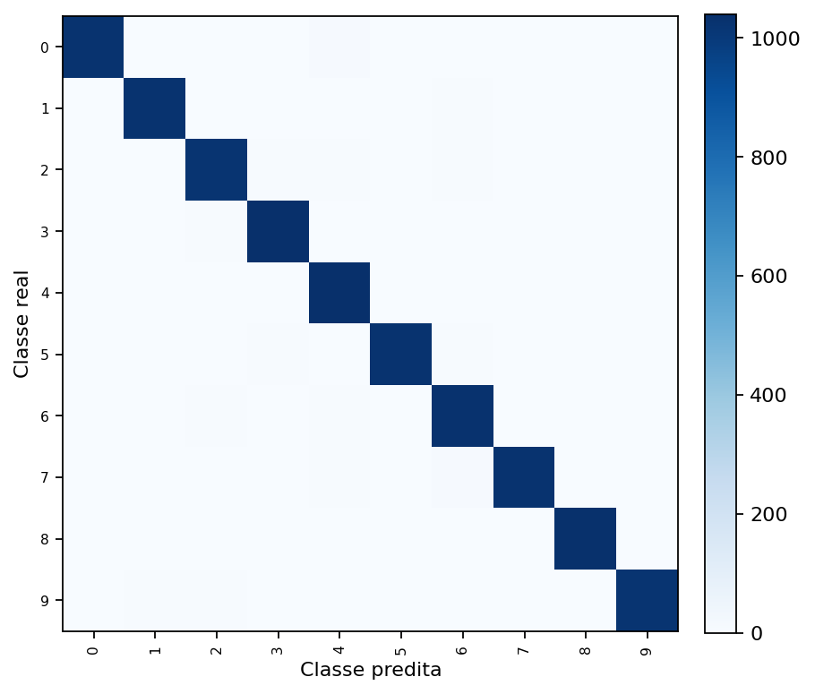
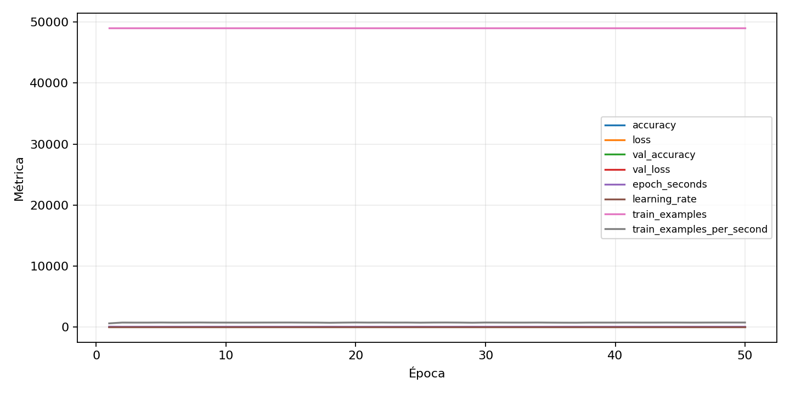

| n_samples | 10500 |
|---|---|
| loss | 0.10137318819761276 |
| accuracy | 0.98 |
| balanced_accuracy | 0.9800000000000001 |
| macro_f1 | 0.9800279979723154 |


| Índice | Classe | Suporte | Precisão | Recall | F1 |
|---|---|---|---|---|---|
| 0 | 0 | 1050 | 0.9932236205227493 | 0.9771428571428571 | 0.985117618819011 |
| 1 | 1 | 1050 | 0.9799618320610687 | 0.9780952380952381 | 0.9790276453765491 |
| 2 | 2 | 1050 | 0.9705603038936372 | 0.9733333333333334 | 0.9719448407037566 |
| 3 | 3 | 1050 | 0.9810606060606061 | 0.9866666666666667 | 0.9838556505223173 |
| 4 | 4 | 1050 | 0.9611829944547134 | 0.9904761904761905 | 0.975609756097561 |
| 5 | 5 | 1050 | 0.9894026974951831 | 0.9780952380952381 | 0.9837164750957855 |
| 6 | 6 | 1050 | 0.960820895522388 | 0.9809523809523809 | 0.9707822808671066 |
| 7 | 7 | 1050 | 0.9913127413127413 | 0.9780952380952381 | 0.9846596356663471 |
| 8 | 8 | 1050 | 0.9828571428571429 | 0.9828571428571429 | 0.9828571428571429 |
| 9 | 9 | 1050 | 0.9912790697674418 | 0.9742857142857143 | 0.9827089337175792 |
{"adapter":"kmnist","balance_mode":"all_raw","class_names":["0","1","2","3","4","5","6","7","8","9"],"dataset":"kmnist","dataset_options":{},"dataset_root":"/home/msduda/datasets-tcc/kmnist","native_channels":1,"normalization":"unit_interval","num_classes":10,"protocol":{"checkpoint_monitor":"val_macro_f1","dtype_policy":"mixed_float16","early_stopping":{"patience":50,"restore_best_weights":true},"evaluation_augmentation":false,"input_channels":"native","optimizer":"Adam","pretrained_weights":false,"reduce_lr_on_plateau":{"factor":0.3,"min_lr":1e-07,"patience":50},"resize":"proportional_padding","test_time_augmentation":false,"training_from_scratch":true},"seed":42,"source_fingerprint":"8928d478d8d23938a73b4f4a92c407bf3d74beff1e0e67e3644d6ecdc30cf828","source_manifest":{"class_names":["0","1","2","3","4","5","6","7","8","9"],"joined_samples":70000,"metadata":{"layout":"kmnist-component-npz"},"name":"kmnist","native_channels":1,"source_path":"/home/msduda/datasets-tcc/kmnist","splits":{"test":10000,"train":60000},"target_size":64},"target_size":64,"test_fraction":0.15,"train_fraction":0.7,"training":{"augmentation":{"brightness_delta":0.0,"contrast_lower":1.0,"contrast_upper":1.0,"cutout_max_frac":0.0,"cutout_prob":0.0,"flip_lr":false,"noise_std":0.0,"translate_frac":0.0,"zoom_max":1.0,"zoom_min":1.0},"batch_size":112,"default_image_size":64,"dtype_policy":"mixed_float16","early_stopping_patience":50,"extra_fraction":0.0,"image_size_overrides":{"gtsrb":128},"keras_verbose":1,"learning_rate":0.0003,"max_epochs":50,"preprocess_cache_max_mib":0,"reduce_lr_factor":0.3,"reduce_lr_min_lr":1e-07,"reduce_lr_patience":50,"shuffle_buffer_max_mib":0},"validation_fraction":0.15}
{"epochs_completed":50,"epochs_recorded":50,"evaluation_seconds":23.422453980001592,"fit_seconds_current_attempt":3934.256702995999,"max_epoch_seconds":79.02204582599916,"max_epochs":50,"mean_epoch_seconds":65.7018045170802,"mean_train_examples_per_second":746.4328452611495,"median_train_examples_per_second":749.1723874328129,"min_epoch_seconds":64.1489135110005,"selected_checkpoint":"/mnt/e/tcc-benchmark/outputs/kmnist-alldata-noaug-batch-sweep-2026-08-06/batch-112/kmnist/runs/kmnist__unit_interval__all_raw__seed-42/checkpoints/best.keras","total_seconds":3285.09022585401,"training_seconds":3285.09022585401,"wall_seconds_current_attempt":3961.1754538759997}
{"elapsed_seconds":3961.2252355950022,"event_counts":{"data_preparation_end":1,"data_preparation_start":1,"epoch_end":50,"evaluation_end":1,"evaluation_start":1,"fit_end":1,"fit_start":1,"periodic":781,"run_completed":1,"train_start":1},"generated_at":"2026-08-07T07:47:28.515+00:00","gpu_backend":"pynvml","interval_seconds":5.0,"metrics":{"cpu_percent":{"count":839,"max":17.6,"mean":12.923718712753278,"min":0.0,"p50":12.5,"p95":16.7},"disk_data_free_bytes":{"count":839,"max":998270033920.0,"mean":998269972914.4982,"min":998269964288.0,"p50":998269972480.0,"p95":998269976576.0},"disk_data_percent":{"count":839,"max":2.7,"mean":2.7,"min":2.7,"p50":2.7,"p95":2.7},"disk_data_total_bytes":{"count":839,"max":1081101176832.0,"mean":1081101176832.0,"min":1081101176832.0,"p50":1081101176832.0,"p95":1081101176832.0},"disk_data_used_bytes":{"count":839,"max":27838857216.0,"mean":27838848589.50179,"min":27838787584.0,"p50":27838849024.0,"p95":27838849024.0},"disk_output_free_bytes":{"count":839,"max":207370682368.0,"mean":207357386776.41,"min":207356166144.0,"p50":207357083648.0,"p95":207357382656.0},"disk_output_percent":{"count":839,"max":79.3,"mean":79.3,"min":79.3,"p50":79.3,"p95":79.3},"disk_output_total_bytes":{"count":839,"max":1000186310656.0,"mean":1000186310656.0,"min":1000186310656.0,"p50":1000186310656.0,"p95":1000186310656.0},"disk_output_used_bytes":{"count":839,"max":792830144512.0,"mean":792828923879.59,"min":792815628288.0,"p50":792829227008.0,"p95":792830050304.0},"elapsed_seconds":{"count":839,"max":3961.168379,"mean":1982.9293799749703,"min":0.025241,"p50":1980.755382,"p95":3779.5048187},"gpu_count":{"count":839,"max":1.0,"mean":1.0,"min":1.0,"p50":1.0,"p95":1.0},"gpu_memory_percent":{"count":839,"max":34.861087799072266,"mean":34.421578408424274,"min":29.832983016967773,"p50":34.44375991821289,"p95":34.674930572509766},"gpu_memory_total_bytes":{"count":839,"max":8589934592.0,"mean":8589934592.0,"min":8589934592.0,"p50":8589934592.0,"p95":8589934592.0},"gpu_memory_used_bytes":{"count":839,"max":2994544640.0,"mean":2956791070.81764,"min":2562633728.0,"p50":2958696448.0,"p95":2978553856.0},"gpu_temperature_c":{"count":839,"max":50.0,"mean":42.19427890345649,"min":37.0,"p50":42.0,"p95":48.0},"gpu_utilization_percent":{"count":839,"max":69.0,"mean":18.581644815256258,"min":0.0,"p50":19.0,"p95":43.0},"process_cpu_percent":{"count":839,"max":221.5,"mean":166.64779499404054,"min":0.0,"p50":160.2,"p95":214.20999999999998},"process_read_bytes":{"count":839,"max":10825728.0,"mean":10807518.131108463,"min":7933952.0,"p50":10825728.0,"p95":10825728.0},"process_rss_bytes":{"count":839,"max":4105584640.0,"mean":3891985323.785459,"min":1030184960.0,"p50":4017913856.0,"p95":4095447040.0},"process_vms_bytes":{"count":839,"max":48912412672.0,"mean":48557935312.09535,"min":39580528640.0,"p50":48694992896.0,"p95":48844255232.0},"process_write_bytes":{"count":839,"max":1146880.0,"mean":1136203.0607866507,"min":4096.0,"p50":1146880.0,"p95":1146880.0},"ram_available_bytes":{"count":839,"max":15523008512.0,"mean":12828296417.79261,"min":12615548928.0,"p50":12701978624.0,"p95":13490065408.0},"ram_percent":{"count":839,"max":24.1,"mean":22.813825983313468,"min":6.6,"p50":23.6,"p95":24.0},"ram_total_bytes":{"count":839,"max":16619077632.0,"mean":16619077632.0,"min":16619077632.0,"p50":16619077632.0,"p95":16619077632.0},"ram_used_bytes":{"count":839,"max":4003528704.0,"mean":3790781214.20739,"min":1096069120.0,"p50":3917099008.0,"p95":3993801523.2}},"sample_count":839,"schema_version":1}